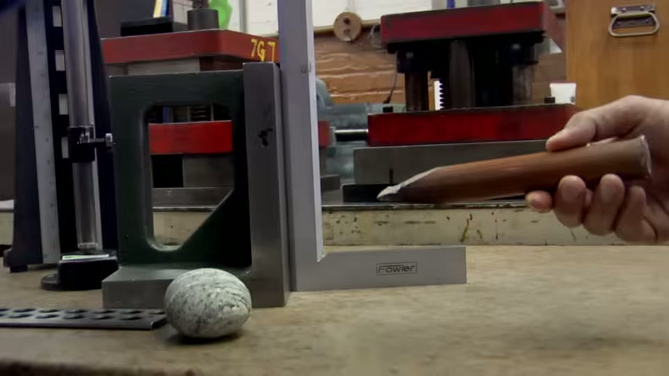
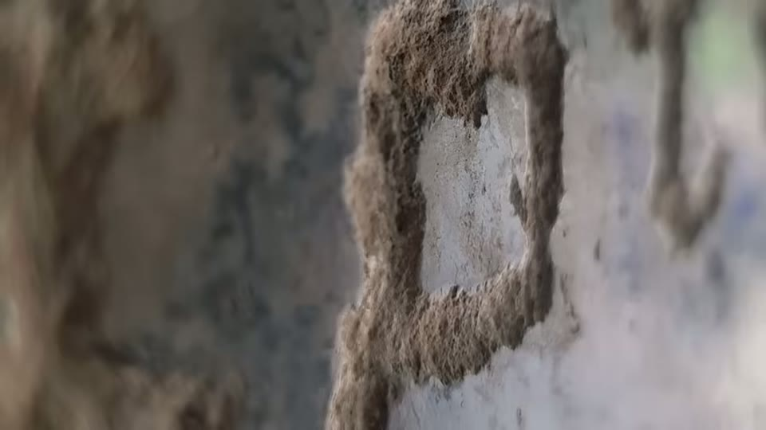
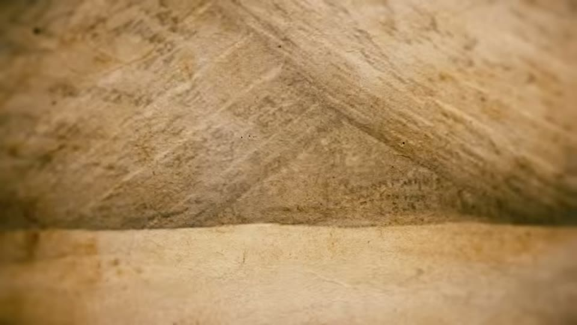
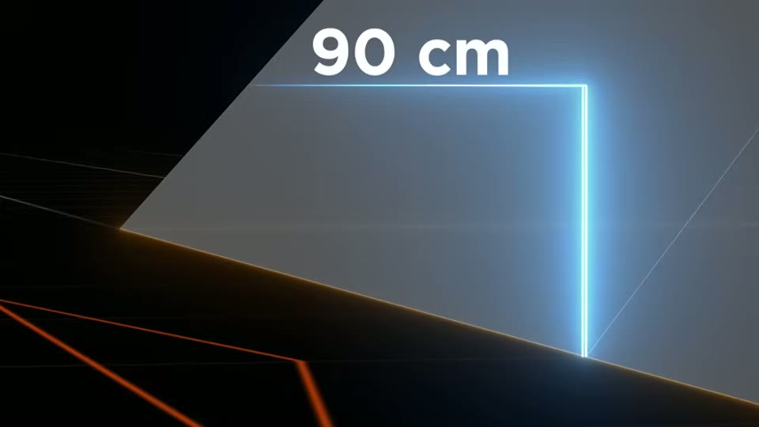
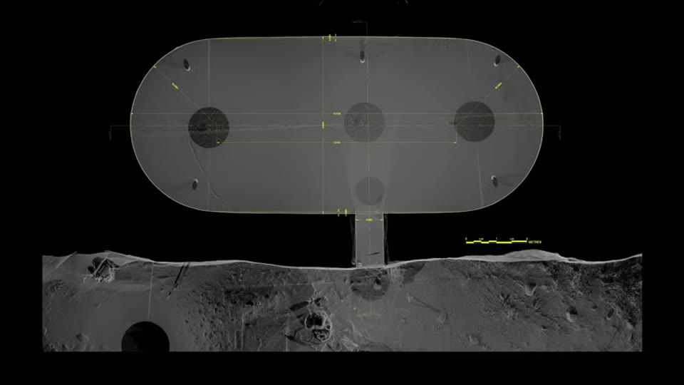

BAM Investigations
Back 2 BAM (sequel to BAM)
Patrice Pouillard · 63 min · watch on YouTube · summarised 2026-08-25
Where the first film travelled, this one explains itself. It is a short sequel — sixty-three minutes against a hundred and thirty-nine — and it is mostly about why the team measured anything at all, what the measuring changed, and where the case is weaker than it was made to look. It also carries one genuinely new result, which arrives in the last ten minutes.
The team describes itself at the start 2:17–3:20: "an independent research team whose members come from varied backgrounds — scientists, engineers, technicians, architects, stonemason and passionate researchers." The stated approach is that a site's accepted context decides in advance what tools its builders can have had, and that this is circular:
"The use of machine tools in ancient Egypt is seen as absurd because everyone knows that Egyptians didn't have machine tools. To go further — how do we know that? Because history says so. Based on what?"
The counter it offers to its own position is stated plainly and is not dodged: "all this does not prove anything… because the absence of proof is not the proof of absence."
The narrowest and most useful claim in either film
Half an hour in, the film says something that materially changes what it is arguing, and it is easy to miss 32:40–33:22:
"Contrary to what some people say, we never oppose the idea that it is possible to cut hard rocks with a copper blade and abrasive. The question is not whether or not cutting hard rock is possible, but rather whether or not it's possible to cut all sides of a several-ton block with such precision."
That is a much smaller claim than "they could not have done this by hand", and a much harder one to dismiss. The hardness argument behind it is conventional: andesite at 6.5–7 on the Mohs scale, copper at 3, so copper cannot scratch it and must instead carry an abrasive. The film accepts all of that. What it disputes is the repeatability — the same dimensions turning up on block after block.

What copper is being asked to cut.
Dating by inscription, and why the film distrusts it
The strongest argumentative section is about how these sites got their dates 11:00–14:00.
At the Serapeum of Saqqara, the twenty-two granite boxes are dated to the 18th dynasty by hieroglyphs. The film's observation is that only one box carries them, and that the carving is poor:
"It's hard to conceive that the same people who crafted these tanks with such care could be satisfied with such flimsy engravings. However, these engravings have determined the dating and the function of these tanks."
That is the two-industries argument in its most literal form: two grades of work on one object, with the cruder grade fixing the date of the finer.

The one box that carries hieroglyphs, and the standard of the carving on it.
At Barabar, the same move is made about the Ashoka inscriptions, and here the film adds a check that is genuinely its own 13:14–13:35. One of the caves carries further inscriptions from the fifth or sixth century CE — a thousand years after Ashoka, on the same walls. The inference offered is not that the caves are older, but that the method is unsafe:
"…which shows that throughout time people have had no hesitation about writing on the walls, which is probably the case with the first inscription."
An inscription dates the inscription. Whether it dates the chamber is a separate question, and the film is arguing that the two have been run together.
The footage makes the point more plainly than the narration does. The cave mouths filmed here are covered in modern painted graffiti — names in Devanagari and in Latin letters, sprayed across polished granite beside the ancient cuts. People have written on these walls in every period, including this one.


People have written on these walls in every period, which is the film's objection to dating the chambers by an inscription.
Curious Being reads the same caves and reaches the opposite conclusion about how they were cut, in her Barabar investigation — and the connection is closer than two parties visiting the same site. The survey footage she works from carries a "RETOUR SUR BAM" logo, which is this film's French title. She is reading this team's own laser scans and arguing against the conclusion they draw from them.
Why the records are missing
The film's answer to if there was something to record, where is the record is historical rather than archaeological 14:53–16:24. It lists destructions of libraries in sequence: Egyptian temples and writings burned by the Persians in 527 BCE and Greek writings in 490; twelve thousand volumes of the Magi at Persepolis under Alexander in 330 BCE; Qin Shi Huang's book burning in 214 BCE; five hundred thousand Phoenician parchments at Carthage in 146 BCE; the books of the Druid college on Caesar's order in 52 BCE; Pergamon around 250 CE; Alexandria in 270 CE and again under Theophilus in 391, with some forty-two thousand books said to remain by then. The figures are attributed to the authors Selbie and Steinmetz.
The Antikythera mechanism is used as the worked example, as in the first film — an object whose existence was not merely lost but whose description in Greek texts had been reclassified as fiction until the object turned up.
This is the film's reply to the objection Curious Being puts most sharply in If It Existed, Where Are the Machines?. The two accounts do not meet: she argues the missing evidence is not documents but wear debris, production waste and worn tooling, which a library fire does not explain.
What the instruments changed, told as a conversion
The Puma Punku material is retold from the first film, but from a different angle: as an account of Érik Gonthier changing his mind after measuring 20:59–30:00.
The sequence given is that Gonthier's first reading of the surfaces was the ordinary one — the classic scraping technique, copper and abrasive, an enormous amount of work — and that he asked the team to bring a roughness tester ("roughometer", in the film's word) to quantify what they were describing. The film is explicit that the instrument came at his request, not theirs.
"Absorbed by his measurements, he doesn't immediately realize the implications."
What the narration says moved him was not the flatness of the outer faces but three things together: the internal faces being as smooth as the external ones, the angles being precise, and the same dimensions repeating from block to block. The film states the order of events deliberately: "These details are so important that once known, they are precisely what makes Éric change his mind, and not the other way around."

The measurement the film treats as its turning point.
The H-blocks are measured with a laser rangefinder, and the metric result is credited to its nineteenth-century source: "Two German archeologists noted the same fact back in 1892."
The metre argument is then restated as six "coincidences" 47:26–53:40 — the French royal span at 20 cm and five spans to the metre; the medieval cubit at 0.5236 m, a sixth of Pi; the same value as the Great Pyramid's royal cubit; the Puma Punku H-blocks; the Rapa Nui–Giza distance; and Sudama's six-metre dome with a three-metre radius centred a metre above the floor. It also names two precursors for the idea that the pyramid encodes the size of the Earth: Isaac Newton, and the mathematician Alexis Jean-Pierre Paucton in a 1781 book dedicated to the King of France.
The film puts the standard objection in its own mouth before answering it: "if you work on the numbers you will always find whatever you want." The answer offered is that the coincidences accumulate, not that any one of them is decisive. The fuller version of this argument, with the Stübel and Uhle drawings behind it, is in the first film.
Is the Great Pyramid a tomb?
A third of the film is spent on this, and it is mostly a survey of what the accepted account rests on 37:46–47:26.
The points made:
- No body has been found in the Great Pyramid or in any pyramid of the first dynasties. The film gives both standard explanations — looting, or symbolic monuments — without choosing.
- Pliny the Elder reports twelve authors who disagreed about the function of the pyramids. None of the twelve survives. What survives is Herodotus, writing two thousand years after the fact, and the film notes Egyptology is itself moving away from him.
- Khufu's name appears in red ink on blocks in the relieving chambers above the King's Chamber. The film reports the authenticity controversy, and that a German team from Dresden sampled the ink in 2013 without permission, which is why the results were rejected. It does not claim the results were right.
- The Merer papyrus, found by Pierre Tallet's team in 2013, is a foreman's logbook recording transport of Tura limestone — the outer casing stone, not the core.
- Wood fragments recovered by Piazzi Smyth were dated to 3341 and 3094 BCE, more than five centuries before the accepted date.

The inscription the tomb attribution rests on.
The radiocarbon problem is the subject of Great Pyramids' Radiocarbon Dating, which works through the same kind of anomalously early results and reaches a different reading of them.
Two structural arguments follow. First, the sequence: Djoser's step pyramid, then Meidum, the Bent and the Red, then the three at Giza, then small brick pyramids that mostly collapsed — "the older constructions are the biggest and the most durable." Second, the arithmetic on Sneferu, who is now credited with all three of Meidum, the Bent and the Red: roughly 3.5 million tons of block across a twenty-five-year reign, which the film puts at 390 blocks a day, every day. And the question it hangs on that — if pyramids are tombs, why does one king need three?
Against Khufu as a monument-builder it sets the surviving portraiture: a single ivory statuette seven centimetres high.
The octagonal indentation is quantified here in a way the first film did not do: the concavity amounts to about 90 cm at the base across 115 m each way, which the film computes as under half a degree of deviation per face, maintained upward through 203 courses of varying height, alongside an orientation error given as 0.05°. It notes three of the pyramids show it — Red, Great and small — and the median one does not.


The concavity of the faces, and the figure put on it.
Related from the other side: Do the Great Pyramid's Math and Star Alignments Really Work? and Not a Power Plant.
The new result: the Gopika scan
The last ten minutes carry what the film exists to add 53:56–58:46.
The 3D scans shown at the end of the first film had not been analysed when that film was cut. In late February 2020 the team filmed a debriefing of the analysis by an engineer from a company the narration calls only AGP, and went back to Barabar in March 2020 to check what the analysis said they had missed.
The narration never expands the initials, but a survey sheet shown on screen does: Art Graphique et Patrimoine, a heritage laser-survey firm at Joinville-le-Pont, with its logo, postal address, telephone and website printed in the title block. The sheet is headed "INDE — Caves de Barabar — Plan à ras du sol sur la grotte n°1 sur SITE 1 — Relevé lasergrammétrique". That turns the survey from an anonymous claim into a checkable one.
The subject is the Gopika cave at Nagarjuni, reconstructed from 44 million scanned points. Three findings:
- the side walls lean inward at under 3°, as already reported — but the angle is not constant: it changes by three tenths of a degree over 8.1 m
- the walls are not flat. They are slightly curved, to a depth of 7.5 cm — "this cave is actually only composed of curves" — which the film says appears in no archaeological description and could not be seen by eye. This one is not merely narrated: the screen shows the section with a straight reference line laid across it and the departure dimensioned 0.0750 in metres
- the scan was cut lengthwise and each half mirrored onto the other. The result given is that 62% of the 44 million points fall almost in the same place. What is shown for this is a colour deviation map of the whole volume about its mirror plane — mostly green, with red and blue blooms at the ends and along one flank — and no colour scale anywhere in frame


Who did the survey, and what it produced.

The wall curvature, shown as a dimensioned measurement.


The mirrored-halves comparison, and the legend it is shown without.
Gonthier states the conclusion himself, in a seated interview rather than on site, under a burnt-in subtitle: "It is so precise that you have to conclude that this curvature…" What he is shown concluding is that the curvature is deliberate — not that anything follows about who cut it. The film's own gloss is about specification rather than tools: "This degree of precision was part of the technical specifications decided upon before even starting the work." And the rhetorical question it ends on — "are symmetrically-polished mirror-like walls necessary to shelter from monsoons?" — is aimed at the accepted account of the caves as rain shelters granted to an ascetic sect.
The film closes by naming what it is working on next: the energy such work would require, and sound frequencies at Barabar, with the data compiled and not yet quantified.
What you can check yourself
- The Serapeum boxes. Whether only one of the twenty-two carries external hieroglyphs, and what the carving looks like beside the box it is cut into, is a matter of photographs.
- The later inscriptions at Barabar. The film's claim that one cave carries fifth- or sixth-century inscriptions alongside the Ashokan ones is checkable against the epigraphic record, and it is the load-bearing part of the dating argument.
- Mohs hardness. Andesite at 6.5–7 and copper at 3 are standard published values.
- The Merer papyrus. Published by Pierre Tallet; what it records and what it does not is a matter of reading it.
- The Dresden ink sampling of 2013 and the reason it was rejected — the film's own account is that the sampling was unauthorised.
- Piazzi Smyth's wood fragments and their dates.
- Sneferu's three pyramids. The tonnage and the reign length are both published figures; the 390-blocks-a-day arithmetic can be redone.
- The concavity of the faces, visible in aerial and satellite imagery, and which pyramids show it.
- Stübel and Uhle 1892, again, for the H-block dimensions.
What the video does not settle
The 62% figure is shown without its scale. This is the sharpest gap in the film, and frame by frame it is a narrow one. The curvature is shown as a dimensioned measurement, and the survey company is identified in a title block. But the symmetry result is presented as a colour deviation map with no legend — and a deviation map without its scale says nothing, because the whole question is what counts as "almost at the same place". A loose enough threshold would make almost any cut chamber 62% symmetrical; a tight one would make the result remarkable. The number that decides which never appears. No engineer is named and no written report is shown.
Nor is there a comparison case. No second rock-cut chamber — Indian or otherwise, of any date — is scanned and put through the same mirror test. Even with a stated tolerance, one measurement of one cave has nothing to be remarkable against.
"Curved" is doing two jobs. A 7.5 cm departure from flat over walls more than eight metres long could be deliberate curvature or the residue of the cutting process. The film asserts the former by treating it as a specification; nothing in what is shown distinguishes them.
The dating argument is negative throughout. Showing that inscriptions are a weak basis for dating a chamber does not date the chamber. The film offers no alternative date for Barabar or for the Serapeum boxes, and does not claim to.
The libraries argument proves less than it is asked to. That records were destroyed is well attested. It explains missing texts. It does not explain missing tools, missing workshops, missing production debris or missing wear, which is what the objection it answers is actually about.
Several claims in the Egyptian section have no image behind them. The seven-centimetre statuette of Khufu is described and not shown. The Merer papyrus is named and not shown — what appears instead is a locator map of the Tura quarry. The red inscriptions above the King's Chamber are filmed, but nothing is legible, and the film says why: "we have not yet been able to see them from close up." The 90 cm concavity figure is presented as a motion graphic with no source given.
The pyramid-function section surveys rather than tests. Every point in it — no body, Pliny's twelve authors, Herodotus's distance from events, the ink controversy — is an argument that the accepted reading is under-evidenced. None is evidence for a different function, and the film proposes none.
The conversion narrative is the film's own framing. Gonthier is shown giving conventional explanations early and being troubled later, in that order, which is an editorial choice as much as a record. He does state one conclusion on camera — that the Gopika curvature is deliberate. He is not shown endorsing anything beyond that, and in the first film he says on the record that the Puma Punku surfaces are hand-made.
Newton and Paucton are cited without their texts. Neither is quoted and neither work is shown.
Selbie and Steinmetz are named as the source for the library figures; the work is not identified beyond the surname pair.
See also
- BAM, Builders of the Ancient Mysteries — the film this one explains, with the Puma Punku and Barabar fieldwork in full
- I Spent Months Investigating the Barabar Caves — the same caves, the opposite conclusion
- If It Existed, Where Are the Machines? — the objection the libraries argument answers
- Great Pyramids' Radiocarbon Dating · Questioning the Luminescence Dating Result
- Do the Great Pyramid's Math and Star Alignments Really Work? · Not a Power Plant · The Pyramid Theory That Solves Every Construction Mystery
- What They are Not Telling You About Precise Egyptian Stone Vases? — the retraction, on precision claims of the same kind
What we have not checked
- The Art Graphique et Patrimoine survey itself. The company is now identified from its own title block, but no report, engineer or tolerance has been located, and the 62% figure cannot be assessed without the last of those. Their published work on Barabar has not been looked for.
- Selbie and Steinmetz, and the individual library-destruction figures.
- Whether only one Serapeum box carries external hieroglyphs.
- The epigraphic record for the later Barabar inscriptions.
- Paucton 1781 and the Newton attribution.
- Whether Patrice Pouillard is credited on screen; unconfirmed from the first film's frames.